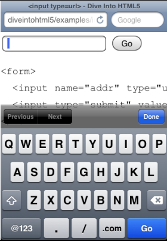

La sintaxis de una dirección web está restringida por los estándares de Internet relevantes. Si alguien le pide que ingrese una dirección web en un formulario, está esperando algo como " http://www.google.com/", no "125 Farwood Road". Las barras diagonales son comunes, incluso la página de inicio de Google tiene tres de ellas. Los períodos también son comunes, pero los espacios están prohibidos. Y cada dirección web tiene un sufijo de dominio como ".com" o ".org".
El iPhone modificó su teclado virtual, al igual que lo hizo con las direcciones de correo electrónico , pero ahora está optimizado para las direcciones web. La barra espaciadora se reemplazó por completo con tres teclas virtuales: un punto, una barra inclinada y un botón ".com". (Puede mantener presionado el botón ".com" para elegir otros sufijos comunes como ".org" o ".net"). La mayoría de los navegadores de escritorio modernos simplemente se muestran type="url"como un cuadro de texto normal, por lo que los usuarios ni siquiera se darán cuenta hasta que envíen el formulario . Los navegadores que no son compatibles con HTML5 se tratarán type="url"exactamente como type="text", por lo que no hay inconveniente en usarlo para todas sus necesidades de ingreso de direcciones web.
